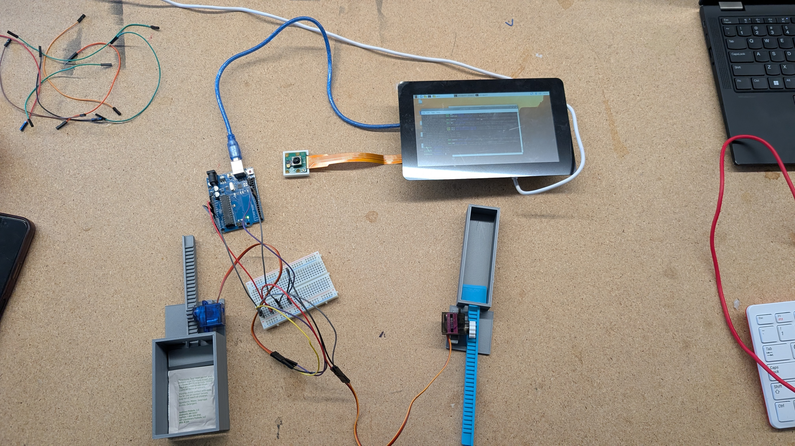
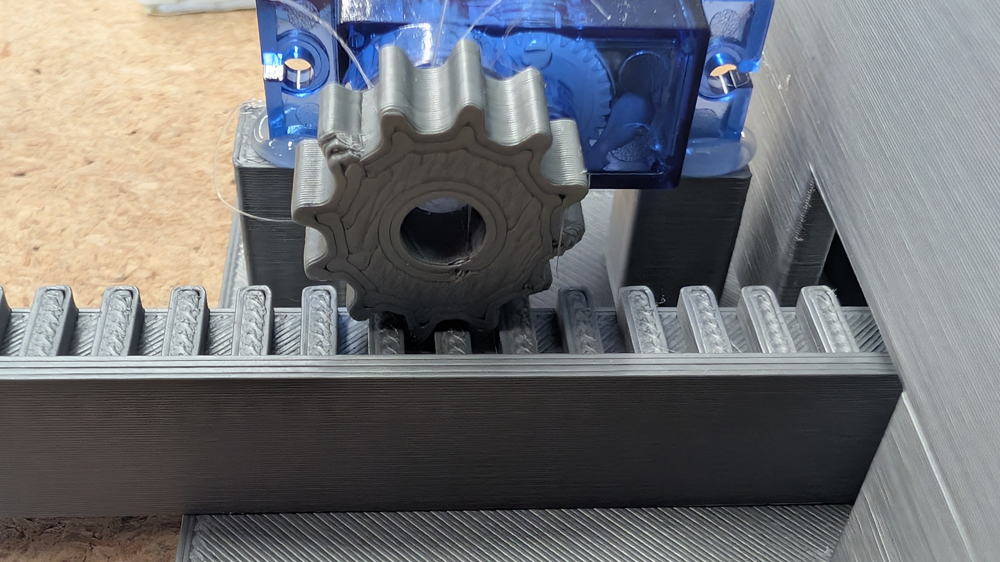
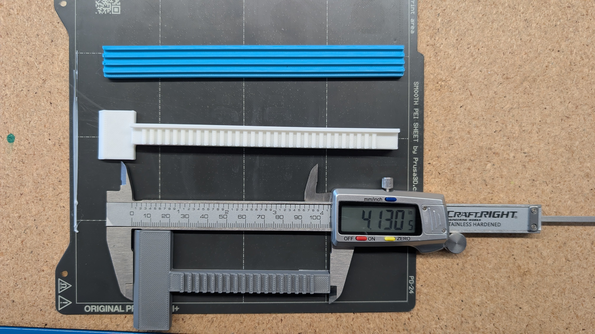
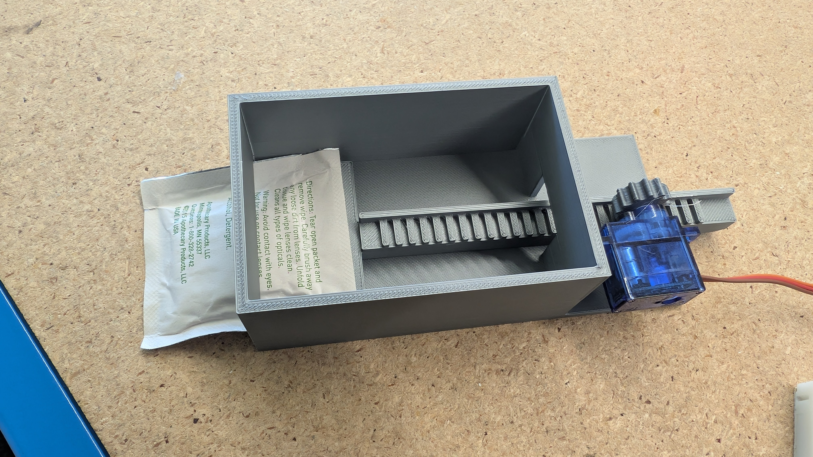
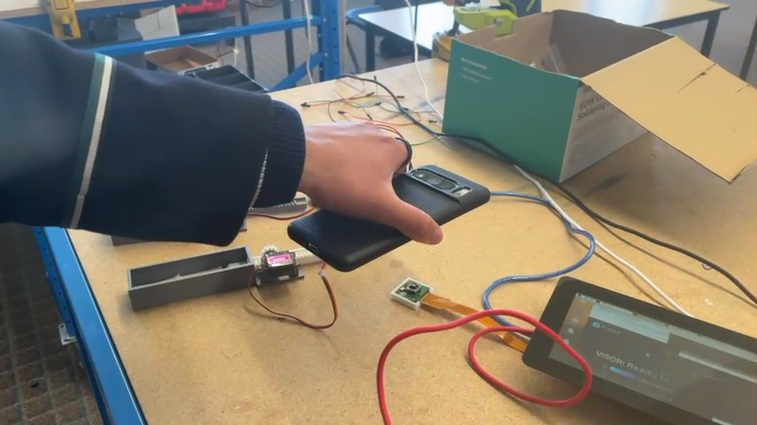
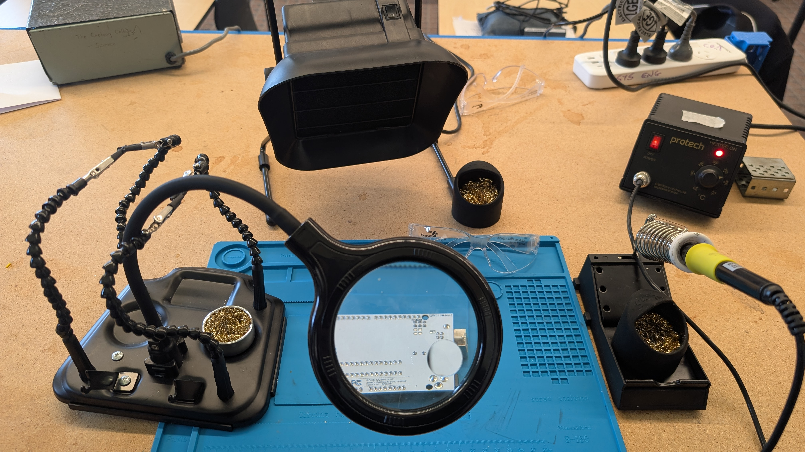

An automated, multimodal first-aid triage and dispensing station engineered to eliminate the "Panic Gap" in school technology workshops. Integrating a dual-controller architecture (Raspberry Pi 5 + Arduino Uno), Gemini 3.7 Flash vision AI, and custom 3D-printed active rack-and-pinion dispensers.

When students or staff sustain minor lacerations, burns, or abrasions in technology workshops, shock and acute disorientation create a dangerous cognitive bottleneck. Passive first-aid kits require stressed users to manually identify and open supplies, causing severe delays in treatment.
Requires an injured, panicked person to make medical decisions under acute cognitive stress.
Automates medical triage and item delivery, bridging the critical treatment window in under 15 seconds.
Every phase of the system is engineered to minimize latency overhead, ensuring that an injured user receives immediate medical relief:
Watch the realized open-frame V.I.S.O.R. test-rig perform a closed-loop first-aid triage cycle: from injury capture to AI diagnosis, UART packet framing, and dual FS90R servo ejection.
Click any technical image below to inspect the fabrication details, CAD kinematics, and physical testing setup of the V.I.S.O.R. prototype.
Prioritized unobstructed diagnostic line-of-sight to gear engagement, package clearances, and oscilloscope test points.

Involute spur profile generated via Fusion 360 Python API, translating FS90R rotational torque into linear horizontal thrust.

Original 95mm rack left packaging trapped at exit slit. Extended 26-tooth rack achieved 118.5mm measured stroke to clear chute.

FS90R servo drives pusher sled forward under load, forcing flexible foil packet clear of the friction-prone cartridge bed.

Presented standardized laceration images to validate Gemini 3.7 Flash triage classification and output schema conformity.

Isolated mains power brick feeding a regulated 5V 3A DC bus with electrolytic smoothing capacitors to suppress servo inductive spikes.
V.I.S.O.R. decouples high-level cloud reasoning and multimedia kiosk management from low-level electromechanical PWM timing using a dedicated dual-controller topology.
Executes multi-threaded compiled Rust application handling high-bandwidth sensory input, encrypted cloud API communication, and Chromium kiosk automation.
Guarantees deterministic, jitter-free hardware PWM servo timing without thread preemption or operating system scheduling delays.
servo.detach() Idle Sleep
< and >. Flags: b=1 (Dispense Bandage), a=0 (Hold Alcohol Pad).
STATUS:DISPENSE_COMPLETE upon reset.
Inspect key implementation modules across the Rust high-level control pipeline, Arduino actuator firmware, and parametric CAD gear generation script.
use serde::{Deserialize, Serialize};
use serde_json::json;
/// Strict schema returned by Gemini 3.7 Flash multimodal vision triage
#[derive(Debug, Clone, PartialEq, Eq, Serialize, Deserialize)]
pub struct DispenseItems {
pub bandage: bool,
pub alcohol_pad: bool,
}
#[derive(Debug, Clone, PartialEq, Eq, Serialize, Deserialize)]
pub struct VisorAnalysis {
pub can_help: bool,
pub reasoning: String,
pub dispense: DispenseItems,
pub video_search_query: Option<String>,
}
/// Constructs the JSON payload with structured response format schema
pub fn build_request_body(base64_string: &str) -> serde_json::Value {
let prompt_text = "Analyze this image to evaluate the user's first-aid needs. \
Available supplies: Bandage (Normal Size), Alcohol Prep Pad. \
Determine if minor condition can be treated using ONLY available items. \
For each item, specify true to dispense or false to hold. If severe, set can_help to false.";
json!({
"model": "gemini-3.7-flash",
"input": [
{ "type": "text", "text": prompt_text },
{ "type": "image", "data": base64_string, "mime_type": "image/jpeg" }
],
"response_format": {
"type": "text",
"mime_type": "application/json",
"schema": {
"type": "object",
"properties": {
"can_help": { "type": "boolean" },
"reasoning": { "type": "string" },
"dispense": {
"type": "object",
"properties": {
"bandage": { "type": "boolean" },
"alcohol_pad": { "type": "boolean" }
},
"required": ["bandage", "alcohol_pad"]
}
}
}
}
})
}/// Parses incoming serial frames from the Arduino Uno into typed responses
pub fn parse_serial_response(raw: &str) -> ArduinoResponse {
let clean = raw.trim();
if clean.is_empty() { return ArduinoResponse::Empty; }
if clean == "STATUS:READY" { return ArduinoResponse::Ready; }
if clean == "STATUS:HOLD_ALL" { return ArduinoResponse::StatusHoldAll; }
if clean == "STATUS:DISPENSE_COMPLETE" { return ArduinoResponse::StatusComplete; }
if clean == "PONG" { return ArduinoResponse::Pong; }
// Parse ACK:DISP:b,a frame acknowledgment
if let Some(parts) = clean.strip_prefix("ACK:DISP:") {
let tokens: Vec<&str> = parts.split(',').collect();
if tokens.len() == 2 {
return ArduinoResponse::AckDispense {
bandage: tokens[0] == "1",
alcohol: tokens[1] == "1",
};
}
}
ArduinoResponse::Unknown(clean.to_string())
}// --- Continuous Rotation Servo Tuning (FEETECH FS90R) ---
const int SERVO_STOP = 90;
const int SERVO_FORWARD = 48; // ~50 RPM forward push
const int SERVO_REVERSE = 132; // ~50 RPM reverse retract
// --- Dispense Cycle Timing (120mm rack travel) ---
const unsigned long TIME_PUSH_MS = 1700; // 1.7s push stroke
const unsigned long TIME_PAUSE_MS = 150; // Dwell buffer
const unsigned long TIME_RETRACT_MS = 1700; // 1.7s retract reset
void runDispenserCycle(Servo& servo, uint8_t pin) {
servo.attach(pin);
// 1. Forward Push Stroke
servo.write(SERVO_FORWARD);
delay(TIME_PUSH_MS);
// 2. Dwell Pause
servo.write(SERVO_STOP);
delay(TIME_PAUSE_MS);
// 3. Reverse Retract Stroke
servo.write(SERVO_REVERSE);
delay(TIME_RETRACT_MS);
// 4. Auto-Detach: Stop PWM to eliminate idle jitter & current draw
servo.write(SERVO_STOP);
servo.detach();
}# Fusion 360 Parametric Involute Gear Generation
import math
MODULE = 1.273 # Pitch Module (mm)
PRESSURE_ANGLE = math.radians(20.0)
PINION_TEETH = 12 # 12-Tooth Drive Pinion
RACK_TEETH = 26 # Extended 120mm Rack (26 Teeth)
CIRCULAR_PITCH = math.pi * MODULE # 4.0mm Circular Pitch
# Pitch Diameter: D = m * z
pitch_diameter = MODULE * PINION_TEETH # 15.28 mm
base_diameter = pitch_diameter * math.cos(PRESSURE_ANGLE)
effective_stroke = (RACK_TEETH - 1) * CIRCULAR_PITCH # 100.0mm + 18.5mm sled
print(f"Calculated Linear Stroke: {effective_stroke:.2f} mm")Empirical testing data collected across 48 automated test suites, subsystem latency benchmarks, multimodal AI triage trials, and electromechanical packaging ejection tests.
| Parameter | Observed Diagnostic Measurement & Analysis |
|---|---|
| Purpose: | Measure internal compute overhead and verify compliance with the <15.0s emergency triage SLA. |
| Subsystem Benchmarks: | Audio downmix: 2.90 ms | JSON parse: 4.52 µs | UART build: 0.87 µs. Local compute overhead: 0.019%. |
| Operational Trials: | Trial 1: 14.2s | Trial 2: 15.8s | Trial 3: 14.9s | Trial 4: 16.0s | Trial 5: 14.6s (Mean: 15.1s). |
| Engineering Finding: | Rust code execution is negligible; external school 2.4GHz Wi-Fi congestion and TLS handshake drive latency variance. |
| Parameter | Observed Diagnostic Measurement & Analysis |
|---|---|
| Protocol Test Suite: | 14 packet variations streamed to Arduino Uno (valid frames, holds, pings, buffer overruns); 14/14 passed (100%) with zero byte corruptions. |
| AI Triage Trials: | 8 focused laceration images: 100% correct (8/8). 2 motion-blurred photos: defaulted safely to can_help: false. Aggregate: 80%. |
| Engineering Action: | Implement OpenCV/Rust Laplacian variance filter to prompt users to hold hand steady before making cloud API dispatch. |
| Parameter | Observed Diagnostic Measurement & Analysis |
|---|---|
| Linear Stroke Length: | Target: ≥110.0mm. Measured Vernier Caliper Travel: 118.5mm (verified adequate reach to clear chute). |
| Dispensing Cycles: | 10 operational cycles: 8 successful drops, 2 packaging jams (80% reliability against >90% target). |
| Mechanical Cause: | Flexible packaging crinkles vertically under forward thrust, catching on 3D-print layer lines at the 2.5mm exit threshold. |
| Action Plan: | Widen exit threshold to 3.2mm in CAD; post-process cartridge bed with 400-grit wet sanding and PTFE dry lubricant. |
Download the complete VCE Systems Engineering SAT folio, technical evaluation document, and chronological engineering logbook.
Problem definition, user need analysis, design constraints, alternative solution evaluation, and Gantt production schedule.
Download Part A (PDF)Production logs, mechatronic subsystem integration, diagnostic test procedures, data calculations, and Systems Engineering Process (SEP) review.
Download Part B (PDF)Full production diary recording machine tool usage, risk assessment checks, circuit iterations, and testing milestones.
Download Logbook (CSV)